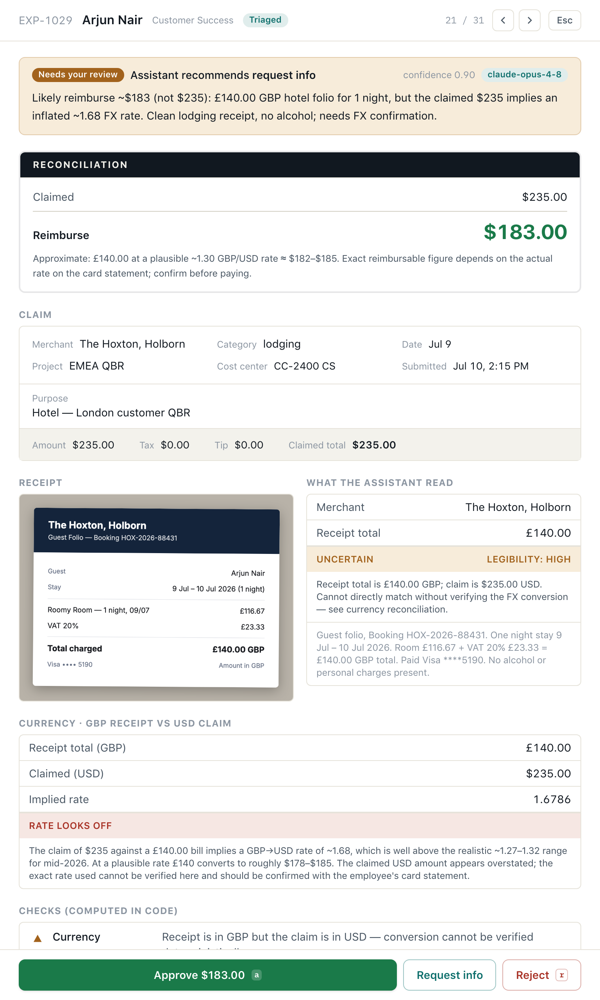
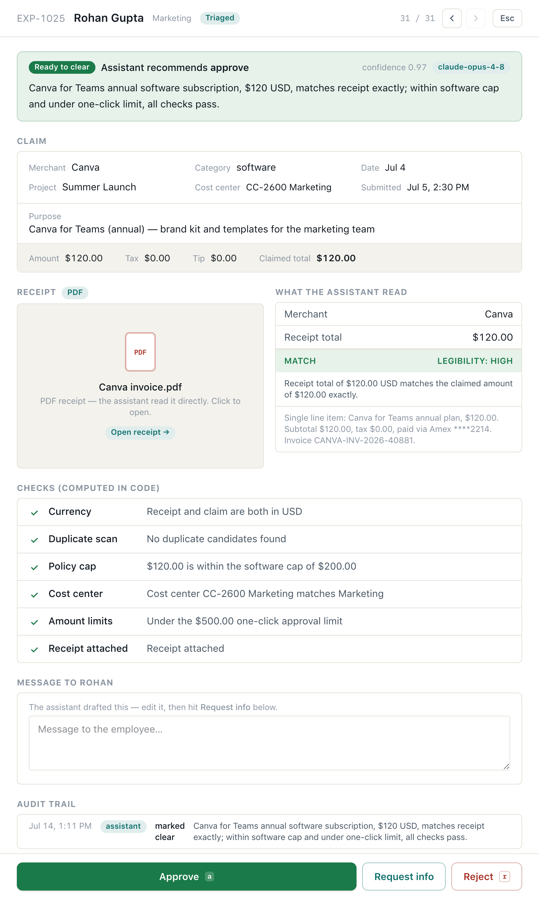
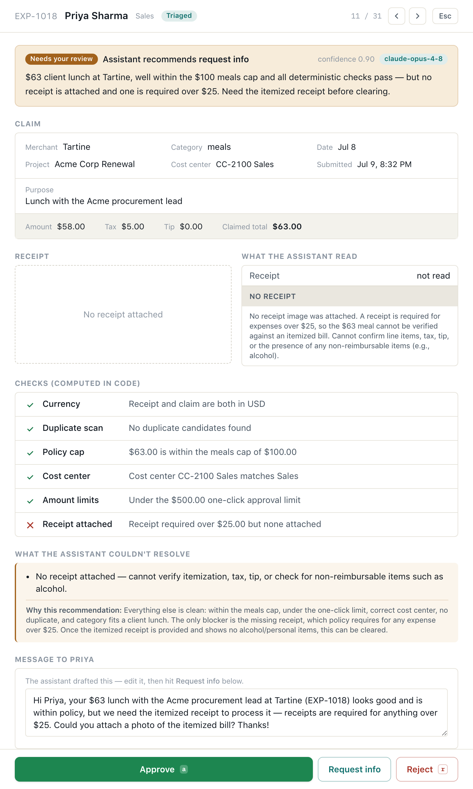
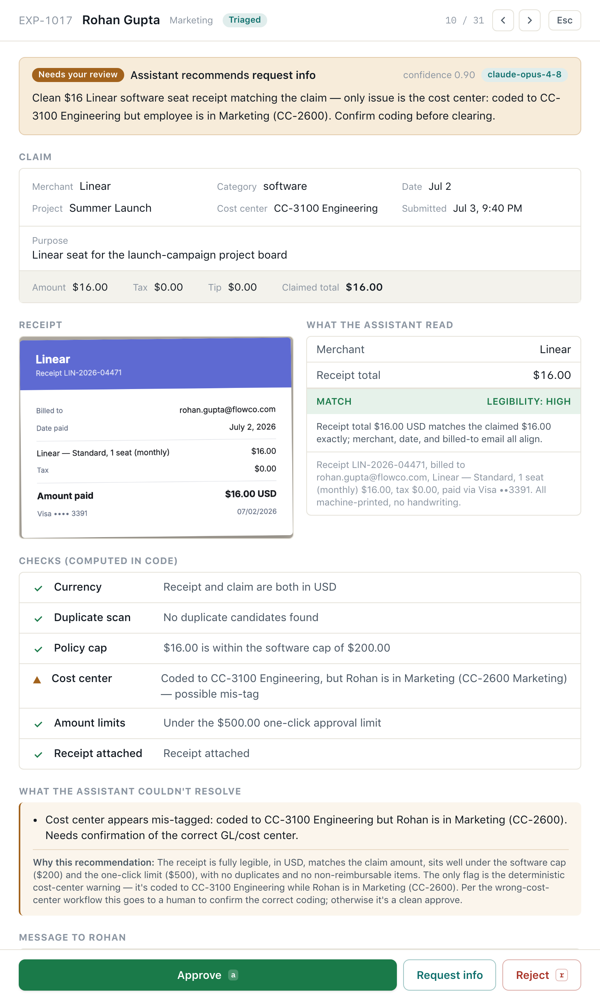

The assistant does the digging. The human decides in seconds.
A capability showcase — every requirement in the brief, mapped to a feature you can watch work on a live URL. Built around one honest idea: an AI that compresses investigation into decision, and is deliberately never given the decision itself.
Approvals aren't slow because deciding is hard. They're slow because of the digging.
Today a FlowCo approver does archaeology on every flagged expense: squint at a receipt, cross-reference a static policy doc, hunt a spreadsheet for duplicates, email the employee, wait, re-review. The click to approve is instant — everything before it is the cost.
So the assistant's job in this prototype is not to approve or reject. It investigates — reads the receipt, runs the policy math, reconciles the currency, compares the duplicates, drafts the follow-up — and lays the evidence in front of a human who then decides in seconds. Clean cases pool in a one-click lane; everything ambiguous arrives with the work already done and an explicit list of what the assistant could not resolve.
The user story I built for — verbatim from the brief
"As a member of FlowCo's internal Approvals team, when the assistant can't resolve something — a policy exception, an ambiguous receipt, a possible duplicate — I want an AI-assisted way to triage and clear it fast, so I'm not manually digging through every flagged case."
What the live demo contains right now
31
Expenses in the queue
8
Auto-cleared (26%)
23
Routed to a human
$85.15
Non-reimbursable caught
Every number above is live — produced by claude-opus-4-8 reading real receipt images and PDFs, not hard-coded. The 23 flagged cases span every reason the brief names, plus edge cases only a model can judge. This document walks each one with a screenshot from that live run.
Today's manual workflow, line by line — and what now does it for them
The brief describes FlowCo's current reality: a seven-screen employee form and a seven-step manual review, unenforced by any system. Every one of those lines is a place the assistant now adds value. This is the map.
The approver's seven manual steps →
What happens today (from the brief)
What the assistant does now
Gets an email with a link to the report
The expense arrives in a triage queue already investigated — no context-switch
Checks the amount against a static policy-cap doc — not enforced by any system
Deterministic policy caps per category are enforced in code; over-cap is flagged before a human looks
Eyeballs the receipt image against the claimed amount
Model reads the receipt (photo or PDF), extracts the total, reconciles it to the claim, and reports legibility
Under $500 & everything matches → one-click approve
These pool in a Ready-to-clear lane — approve the whole lane in one click
Anything off (wrong cost center, mismatch, missing receipt, over $1,000) → email the employee, wait, re-review
Each is a deterministic check and a pre-drafted, specific message to the employee — send in one click
Possible duplicate / policy exception → manually check a spreadsheet of past submissions
Model compares the candidate records and characterizes the duplicate; lays out per-person math for exceptions
Approved → payroll. Flagged → sits in the approver's personal queue
Every decision is one keystroke, fully audited, with Undo
The employee's seven form screens → one sentence
Screen the employee fills today
How the optional conversational submit handles it
1 — Trip / purpose · linked cost center
Extracted from the sentence; cost center auto-picked from the employee's department
2 — Category (cap shown but not enforced)
Inferred from the merchant & context; the cap is then enforced downstream
3 — Merchant, date, currency
Parsed, including relative dates ("last night") and currency
4 — Pre-tax amount, tax, tip
Split out where stated; left blank and flagged when not
5 — Receipt upload · OCR'd amount shown back to confirm
The extracted draft is shown back for a one-tap confirm — exactly this pattern
Deterministic code for money and routing. The model for reading and judgment.
The single most important design decision: the model never decides who gets approved. Code computes the policy math and owns the routing; the model does the things only it can — read a crumpled receipt, find an alcohol line, reconcile a foreign currency, explain, and draft. Their outputs meet at a guardrail that can only ever make routing stricter.
Deterministic checks · pure code
Policy caps per category (meals $100, travel $500, lodging $250/nt, software $200, other $100)
Amount limits — one-click under $500, always-review over $1,000
Duplicate detection — same employee + merchant, same day or same amount within 3 days
Receipt presence (required over $25), cost-center vs. department, currency mismatch
Model · claude-opus-4-8 · vision
Reads the receipt — line items, handwriting, foreign taxes, photo or PDF
Finds non-reimbursables code can't see — alcohol, personal items
Reconciles FX, characterizes duplicates, checks category & date
Enumerates its own uncertainty and drafts the employee message
The routing guardrail (code, not vibes)
A case auto-clears only if every deterministic check passes and the model is confident and the receipt reconciles and there's no non-reimbursable line, no unverifiable FX, no mis-categorization, and no date discrepancy. The model can escalate to a human; it can never talk its way out of one.
Why this split matters
The clearest proof is the alcohol case: a "no alcohol" rule is impossible in code — nothing in the structured claim says what was ordered. So it is entirely the model's job. But the model doesn't get to approve around it: the guardrail refuses to auto-clear any receipt where the model reports a non-reimbursable line. Code owns the consequence; the model owns the perception.
Stack
Next.js (App Router) · React · Tailwind · @anthropic-ai/sdk with schema-constrained structured outputs (zod) + adaptive thinking · Supabase (Postgres + Storage) in production, in-memory locally · deployed on Vercel with hourly model-call cost caps and vision-sized timeouts.
One click on Run assistant triage: deterministic checks run in code, then the model reads every receipt. Thirty-one submissions resolve into two lanes — the clean ones ready to clear together, the rest arriving with the investigation done.
The approver's queue after triage. Eight expenses auto-cleared (a third of the queue) — including one with no receipt at all (parking under the $25 threshold, so policy doesn't require one) and one whose receipt is a PDF, not a photo. The headline metric — $85.15 recovered — is money the assistant caught that policy says shouldn't be reimbursed. Filter chips count every flag reason at a glance.
The lane is the product
Auto-clear is earned, not assumed. A case only reaches the green lane when the whole guardrail is satisfied. That's what makes one-click safe: the approver trusts the lane because a model verdict alone can't put anything in it.
Nothing is hidden
Every flagged case leads with the assistant's one-line rationale and its unresolved list. The approver reads a conclusion, not a data dump — and can always open the full evidence, receipt, and deterministic checks.
Reading a real receipt for something no field can hold
This is the case that convinced me the model earns its place. A real, crumpled phone photo of a ₹16,823 team dinner in Goa — in rupees, with local GST/VAT. Deterministic checks flag that it's over the meals cap and in a foreign currency. But the thing that actually matters is invisible to code.
One line, ₹935, that changes the payout
The receipt contains a single alcohol line — "Goan Mudslide (Absolut)". Nothing in the structured claim says "alcohol." Only reading the receipt reveals it. The assistant:
identifies the ₹935 cocktail and its attributable 22% VAT (₹205.70)
reconciles the ₹16,823 total to the $201.50 claim at ~83.5 INR/USD
notices the receipt is marked "Duplicate" — a reprint, not a second submission
hands the approver the exact reimbursable: $187.84
Then it stops. The dinner is still over the $100 meals cap — a policy exception that's the approver's call, with the documented team-offsite purpose laid out. The model prepared the decision; it didn't make it.
policy exceptionambiguous receiptforeign currency
The three flag reasons the brief names — in one real receipt.
Money that has to come off — and honesty when it can't be read
EXP-1024 · non-reimbursable
A personal item on a hotel folio
A $18.99 in-room movie buried in an otherwise-valid $214 Marriott folio. The model deducts it and its tax, and reconciles the reimbursable to $195.01 — a ledger the approver reads in one glance.
EXP-1026 · vision honesty
A receipt it can't fully read
A faded taxi receipt. The model reconciles the line items but flags the smudged printed total as unreadable — "$3#.##, cannot be read digit-for-digit" — instead of guessing. Refusing to invent a number is the feature.
The through-line
Both cases turn on the same principle: when money must move or a number is uncertain, a human confirms it. The assistant's job is to make that confirmation take five seconds — here is the amount to deduct; here is exactly what I couldn't read — not to make the call itself.
Reconciliation is the signature interaction of the whole product. Whenever money comes off — alcohol, a personal item, an FX gap — the evidence panel shows a Claimed → deductions → Reimburse ledger, so the approver sees the corrected amount and approves that, not the claimed total.
07Capabilities · judgment a rules engine can't make
Intent, not just arithmetic
Deterministic checks catch what's measurably wrong. These four cases are wrong in ways only reading and reasoning can surface — and each still routes to a human, because judgment about intent is the approver's to confirm.
EXP-1023 · mis-categorization
A meal disguised as travel
A $185 steakhouse dinner filed as travel (cap $500) instead of meals (cap $100). The model flags the category that doesn't fit the merchant and names the cap it dodges.
EXP-1027/1028 · cap avoidance
One dinner, split to duck the cap
Two checks — $94 and $92 — same table, same card, five minutes apart. The model reassembles the $186 dinner and flags it as a deliberate split to keep each half under the $100 cap.
EXP-1031 · double gratuity
Tipped twice
An 18% service charge already included, plus a $12 tip written on top. The model catches the double gratuity — and correctly notes the "N/A cocktails" are non-alcoholic, so it doesn't false-flag them.
EXP-1030 · date reconciliation
A receipt dated wrong
The receipt reads Jul 2; the claim says Jul 6. Amounts match perfectly, so nothing else trips — but the model flags the 4-day gap, and a code guardrail makes sure a date mismatch never auto-clears.
08Capabilities · the duplicate, told as a contrast
Telling a real double-submission from a coincidence
"Possible duplicate" is one of the three cases the brief names. The deterministic check flags candidates — same employee, same merchant, close in time. The hard part, and the model's real job, is saying which kind each one is. The same capability, shown discriminating:
reject oneA genuine double-submission. Same $20 Notion seat, same day, the same receipt attached twice. The model's call: "approve one, reject the other." Money FlowCo would otherwise pay twice.
approve bothA coincidence that looks identical to code. Two Goa breakfast bills, same table and 14:07 timestamp — but different items and consecutive bill numbers. A legitimate split of one group meal. The model clears the suspicion.
Why this is the depth of it
A spreadsheet lookup flags both of these — and a naive assistant would either reject both or approve both. Telling them apart requires reading the two receipts and reasoning about what actually happened. That discrimination, not the flagging, is where the model earns its keep.
09Capabilities · currency, formats & the deterministic backbone
Every other reason an approver stops and digs

EXP-1029 · foreign currency
A conversion that doesn't add up
A £140 London hotel claimed as $235 — an implied 1.68 GBP→USD rate the model calls implausible ("should be ~$178"). FX can reveal an over-claim invisible in the raw numbers.

EXP-1025 · photo or PDF
A PDF invoice, not a photo
The brief's form says "Photo or PDF upload." A real Canva .pdf invoice, read natively as a document block, reconciled, and auto-cleared — proof the ingestion isn't image-only.

EXP-1018 · missing receipt
No receipt where one is required
A $63 lunch with no receipt attached — required over $25. Flagged deterministically, with a specific drafted ask to the employee ready to send.

EXP-1017 · wrong GL code
Coded to the wrong cost center
A Marketing expense booked to Engineering's cost center — the "long dropdown" mis-pick from the brief. Caught by mapping each department to its GL code.
Not shown, also covered: over $1,000 always routes to manager review (EXP-1019), and over $500 is beyond the one-click lane (EXP-1020) — both enforced in code regardless of how clean the receipt looks.
11Where the model got it wrong — the part they care about most
The honest bit: a capable model, given the decision, became an unpredictable decider
Before any of the structure above, I built the naive version — one prompt, the receipt, "extract the total and decide." I designed a trap: a receipt supporting $84.50 with a claim of $85.00, a fifty-cent gray-zone overclaim — exactly what triage exists to catch. I expected the model to misread the handwriting. It didn't: four of four correct reads. Perception wasn't the weak point. This was:
// same receipt ($84.50), same claim ($85.00), three identical runs — verbatim
Run 1 → "decision": "flag_for_review"// correct
Run 2 → "decision": "approved"// "approve at $84.50 rather than the claimed $85.00"
Run 3 → "decision": "approve"// "approve for $84.50 ... or request clarification"
Three failures in one probe: it flipped its decision on identical input (a coin flip in exactly the gray zone triage is for); it invented an authority — "approve at the corrected amount," a partial-reimbursement action the product doesn't have; and its output drifted shape run to run (approve vs approved, number vs string), which breaks any queue built on top.
Each failure became a design rule
What the naive model did
What changed in the shipped engine
Gray-zone routing was a coin flip
Routing is code. Any mismatch, failed check, or sub-0.8 confidence → human, 100% of the time. The model can only make routing stricter.
Invented "approve at the corrected amount"
Recommendations are a schema enum of actions that exist (approve / reject / request_info). The human holds the only approve button on flagged cases.
Output shape drifted between runs
Structured outputs + zod validate every verdict. No fences, no type flips.
Uncertainty buried in prose
unresolved[] is a required field. The model must enumerate what it couldn't resolve — and the UI leads with it.
The lesson
The applied-AI work here wasn't perception — the model reads receipts better than I do. It was decision rights and output discipline: a capable model given decision authority becomes an unpredictable decision-maker in exactly the ambiguous cases where the decision matters most. So code decides who decides; the model does what it's uniquely good at.
That same $85.00 case is EXP-1008 in the live app today — it routes to a human every time, with the $0.50 delta called out and the clarification drafted. The fix, live.
The brief's optional stretch: "submit an expense by describing it conversationally instead of filling out seven screens, so I can do it in under a minute from my phone." The same extraction engine that powers triage runs the employee side too.
1 · Describe. One sentence, like you'd tell a coworker — or tap an example. A receipt photo is optional.
2 · Confirm. The model fills every field — merchant, category, amount, currency, cost center, and a resolved date — and shows the draft back (the brief's "OCR'd amount shown back"), with an explicit Still missing list.
3 · Sent — under a minute, from a phone
One tap drops it into the approver's queue, where triage runs automatically. The whole flow — verified on a 375 px viewport — is a sentence, a confirm, and a tap.
One engine, two surfaces. The employee's conversational extraction and the approver's receipt reconciliation are the same code path — which is exactly why building the optional side was worth it: it proves the engine generalizes.
Designed as a calm financial console — "The Reconciliation Desk"
The interface is built to not make you think: a precise reconciliation tool, not generic SaaS. Netchex-native slate ink, a teal accent, a warm paper canvas, and Apple SF Pro with tabular numerals on every amount — the treatment Apple uses in Wallet and Numbers.
Light. Warm paper, tabular figures, the reconciliation ledger as the signature element.
Dark. A full no-flash dark mode that respects the system and a manual toggle — same information architecture.
Built against the Laws of UX
Recognition over recall — a first-run guide, plain-English tooltips on every flag, a ? shortcut overlay
Flow & Fitts — a sticky always-reachable decide bar, auto-advance, full keyboard nav (j/k/a/r)
Doherty — skeletons, a live triage progress bar, a count-up on "$ recovered"
User control — every decision raises a toast with real Undo; nothing is a dead end
Demo-ready by design
Reset demo — a one-click, confirmed reset returns the queue to its 31-case starting point so anyone can run it from the top
Mobile — the employee submit and the case-review panel are fully phone-usable
Peak-End — an "all caught up" inbox-zero and a warm "sent to approvals" success
Honest states — a clearly-labeled mock mode when no API key is present
The brief said a rough prototype is fine. It is a prototype — but the seams that a public, AI-backed demo actually needs are real, because those seams are where an applied-AI product lives or dies.
Cost & safety
Hourly model-call caps — an atomic SQL counter so an unattended public URL can't burn the API budget; a friendly 429 when spent
Vision-sized timeouts — Opus reading a receipt with thinking is a 10–30s call; routes are sized for it
Fail-safe receipts — a receipt that won't load never crashes triage; it routes to a human as unverified
State & deploy
Supabase in production (Postgres for state, Storage for uploads); in-memory locally — chosen by env vars
Every AI action audited — an append-only trail on each expense; decisions carry Undo
Deployed on Vercel, receipts traced into the lambda, one-command redeploy
What I'd measure in production
% auto-cleared & time-to-decision
The core value
Re-review loop rate
Do drafted asks resolve in one round-trip
False-approve rate
The guardrail metric — this is payroll money
What I deliberately dropped, and what's next
Dropped, on purpose: auth, real email/Slack sends, a payroll write-back, and a mobile approver queue — none change whether the triage judgment is right, so depth went to the receipt reading, the ledger, and the guardrail instead. Next: a feedback loop from approver overrides back into the prompts (every override is a labeled signal), real sends behind the drafted messages, and a policy editor so Finance changes caps without a deploy.
The assistant compresses digging into deciding — and is deliberately never handed the decision itself.
That single constraint is what makes the auto-clear lane trustworthy, the reconciliation ledger honest, and the failure story fixable. Everything in this document — thirty-one live cases, every flag reason the brief names, the receipt vision, the FX math, the duplicate discrimination, the conversational submit — sits on top of it.
See it live
flowco-two.vercel.app
Click Run assistant triage, then open EXP-1013. Use Reset demo to start over.
Read the build
github.com/rajdeepmondaldotcom/flowco
The triage engine, the guardrail, and the verbatim failure-story probes are all in the repo.
FlowCo · Approvals Triage
Rajdeep Mondal · Applied AI Product Leader take-home · July 2026